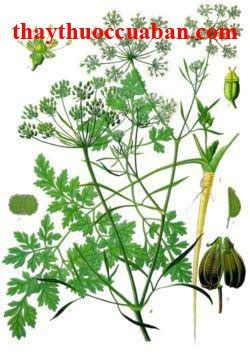

Tên khác
Tên thường dùng: Rau mùi , Cúc biển, Sài đất hai hoa
Tên tiếng Trung: 芫茜
Tên khoa học:Wedelia biflora (L) DC (Verbesina biflora L)
Họ khoa học: thuộc họ Cúc - Asteraceae
Rau mùi
(Mô tả, hình ảnh rau mùi, phân bố, thu hái, thành phần hóa học, tác dụng dược lý...)

Mô tảCây thảo cao 1-1,5m, mọc đứng, gần như trườn, có thân và cành có rãnh nhẵn. Lá hình ngọn giáo, thon lại trên cuống, có mũi nhọn dài, dài 4-7cm, rộng 2-4cm, có lông cứng nham nhám trên cả hai mặt, mép có răng thưa, cuống lá rất mảnh, dài 1-3cm. Hoa đầu cô độc hay từng cặp lưỡng phân hoặc ở nách lá phía ngọn; lá bắc xoan, dài 4-5mm; hoa hình môi có 5-10 cái, giữa các hoa có vảy. Quả bế hình xoan ngược, tròn và có lông ở đỉnh, không có lông mào, dài 4mm, rộng 2,5mm
Phân bố, thu hái:
Phân bố ở Ấn Ðộ, Nam Trung Quốc, Việt Nam, Thái Lan, Philippin. Ở nước ta cây mọc ở nơi ẩm rợp từ ven biển tới độ cao 1500m.
Khi quả chín tới đâu thì nên thu hái tới đấy để tránh những quả chín khi chín quá khỏi bị rụng. Hái toàn tán đem phơi nắng cho khô rồi đập dập lấy quả, tiếp tục đem phơi nắng cho khô và bỏ vào lọ hoặc túi kín để bảo quản, tránh để ẩm
Bộ phận dùng:
Toàn cây - Herba Wedeliae Biflorae.
Mô tả dược liệu
Sử dụng toàn cây có thể dùng sống trực tiếp hoặc sấy khô
Bảo quản:
Bảo quản nơi thoáng mát, khô ráo.
Thành phần hoá học:
Cây chứa decanal. Hạt mùi chứa 0,2% tinh dầu có mùi thơm dịu hơi có mùi cam, mà thành phần chính là d-linalol hay coriandrol (60-70%) với một ít geraniol và L-borneol và khoảng 20% các cacbua: a-pinen, terpinen, các vết b-pinen, dipenten, b-phellandren, camphen. Ở cây tươi, hàm lượng tinh dầu là 0,12% vào lúc có hoa.
Tác dụng dược lý:
Thành phần sử dụng chủ yếu của cây mùi là tinh dầu coriandrol. Thí nghiệm trên chuột cho thấy tinh dầu này có tác dụng giảm căng thẳng lo âu, tác động vào hệ thần kinh trung ương, đồng thời có tác dụng giãn cơ. Đối với hệ tiêu hóa có tác dụng làm tăng nhẹ nhu động ruột, kích thích tiêu hóa và cảm giác thèm ăn, trung tiện, dễ tiêu.
Vị thuốc rau mùi
(Công dụng, liều dùng, tính vị, quy kinh...)
Tính vị:
Vị cay tính ấm mùi thơm
Quy kinh:
Qui kinh phế vị.
Tác dụng:
Theo Y học cổ truyền thuốc có tác dụng phát tán thấu chẩn ( giúp sởi đâïu chóng mọc), giảm độc làm nhẹ trạng thái nhiễm độc toàn thân ( nhất là đối với bệnh sởi trẻ em), kiện vị tiêu thực.
Liều dùng:
Uống trong 4 - 8g.
Dùng ngoài không hạn chế
Ứng dụng lâm sàng của vị thuốc ngô công
.Chữa bệnh sởi trẻ em: Chủ yếu lúc sởi mới mọc, sởi mọc không đều, hoặc sốt kéo dài mà sởi chưa mọc hoặc mọc quá ít, dùng cây rau mùi có tác dụng thúc sởi mọc nhanh và đều, tăng tuần hoàn ngoại vi làm cho độc sởi được phát ra ngoài, trạng thái nhiễm độc được giảm nhẹ.
Dùng ngoài: Hạt rau mùi tươi ( hoặc cả thân lá) 100 - 150g sắc nước sôi độ 5 phút, giã nát để sắc (không sắc lâu) đem xoa ấn vào tay chân và thân mình trẻ ( theo thứ tự lưng trước bụng sau, trên trước dưới sau) không để trẻ bị lạnh. Hoặc dùng Hạt mùi 80g tán nhỏ trộn với rượu 100ml và nước 100ml đun sôi lọc bỏ bã phun vào người bệnh nhi trừ mặt ( để nước thuốc hơi ấm mà dùng).
Uống trong: Hạt mùi 12g sắc nuớc uống ấm trong ngày 1 - 2 lần.
Trị rối loạn tiêu hóa bụng đầy đau do thực tích: Dùng bài: Hồ tuy 8g, Đinh hương 4g, Quất bì 4g, Hoàng liên 4g, sắc nước uống.
Kinh nghiệm trị những chứng khác: Phụ nữ sau đẻ cạn sữa:Quả mùi 6g, nước 100ml, đun sôi 15 phút chia 2 lần uống trong ngày.
Trị da mặt có những nốt đen: Quả mùi sắc nước rửa luôn, nốt đen sẽ mất dần.
Trị lòi dom: Quả mùi đốt hun khói xông hâïu môn.
Trị lãi kim: Hạt mùi tán mịn trộn với bột trứng gà luộc chín và dầu mè liên tục 3 ngày, mỗi ngày một lần trước lúc ngủ.
Trị buồn nôn ợ hơi: dùng hạt Hồ tuy, hạt củ cải, mỗi thứ 40g, tán bột mịn trộn lẫn, mỗi lần uống 4 - 8g, ngày 2 lần.
Phòng bệnh sởi: sắc nước rau mùi cho trẻ uống trong thời gian có tiếp xúc với trẻ mắc bệnh sởi trong 7 - 10 ngày.
Tham khảo
Tính vị, tác dụng: Lá có tác dụng bổ huyết, hoạt huyết, tán ứ, tiêu thũng. Hoa gây xổ mạnh, thân lá già có độc.
Công dụng, chỉ định và phối hợp: Ở Cà Mau (Minh Hải) và nhiều vùng khác của nước ta và Ấn Ðộ, người ta dùng đọt lá non làm rau xào nấu với thịt, ốc len, cá, rùa. Lá cây được dùng làm thuốc trị nổi mầy đay bằng cách lấy 3 nắm lá đậm, vắt, rồi pha đường (hoặc muối) để uống.
Ở Ấn Ðộ, lá giã ra dùng làm thuốc đắp lên da bị biến màu, vết cắt, sâu bọ đốt loét, các chỗ đau, sưng và dãn tĩnh mạch. Cũng dùng đắp vào bụng phụ nữ sau khi sinh và dùng cho những loại đau đớn không rõ nguyên nhân. Dịch lá dùng làm thuốc tăng trương lực cùng với sữa bò cho phụ nữ sau khi sinh con. Dùng phối hợp với Ðại hoàng trị táo bón mạn tính. Lá còn dùng sắc uống trị đái ra máu và thông tiểu. Rễ dùng trị rối loạn về âm đạo, bệnh lậu và sỏi thận hoặc dùng đắp vết thương và ghẻ ngứa.
Ở Malaixia, người ta cũng dùng lá giã và nghiền ra để đắp trị mụn nhọt, apxe, sởi đậu, các vết đốt của sâu bọ. Lá được dùng làm thuốc uống trong trị sốt rét theo chu kỳ, trị đái ra máu. Rễ trị băng huyết.
Ở Philippin, nước sắc lá dùng trị vết thương và trị ghẻ, nước hãm rễ và lá dùng dịu các cơn đau dạ dày.
Ở Quảng Tây (Trung Quốc) cây được dùng trị phong thấp, đau xương, đòn ngã tổn thương, sang dương thũng độc.
Ở Thái Lan, người ta dùng thân lá trị đau đầu và sốt.
Tag: rau mui, vi thuoc rau mui, cong dung rau mui, Hinh anh rau mui, Tac dung rau mui, Thuoc nam, rau mui
Nơi mua bán vị thuốc Rau mùi đạt chất lượng ở đâu?
Trước thực trạng thuốc đông dược kém chất lượng, nguồn gốc không rõ ràng,... xuất hiện tràn lan trên thị trường, làm ảnh hưởng tới hiệu quả điều trị cũng như ảnh hưởng tới sức khỏe của bệnh nhân. Việc lựa chọn những địa chỉ uy tín để mua thuốc đông dược là rất quan trọng và cần thiết. Vậy khách hàng có thể mua vị thuốc Rau mùi ở đâu?
Rau mùi là vị thuốc nam quý, được sử dụng rộng rãi trong YHCT. Hiện tại hầu hết các cửa hàng thuốc đông dược, phòng khám đông y, phòng chẩn trị YHCT... đều có bán vị thuốc này. Tuy nhiên người mua nên chọn những địa chỉ có uy tín, đảm bảo chất lượng, có giấy phép hoạt động để mua được vị thuốc đạt chất lượng.
Với mong muốn bệnh nhân được sử dụng những loại dược liệu đúng, chất lượng tốt, phòng khám Đông y Nguyễn Hữu Toàn không chỉ là đia chỉ khám chữa bệnh tin cậy, uy tín chất lượng mà còn cung cấp cho khách hàng những vị thuốc đông y (thuốc nam, thuốc bắc) đúng, chuẩn, đạt chuẩn chất lượng. Các vị thuốc có trong tiêu chuẩn Dược điển Việt Nam đều được nghành y tế kiểm nghiệm đạt chất lượng tiêu chuẩn.
Vị thuốc Rau mùi được bán tại Phòng khám là thuốc đã được bào chế theo Tiêu chuẩn NHT.
Giá bán vị thuốc Rau mùi tại Phòng khám Đông y Nguyễn Hữu Toàn: Gọi 18006834 để biết chi tiết
Tùy theo thời điểm giá bán có thể thay đổi.
+ Khách hàng có thể mua trực tiếp tại địa chỉ phòng khám: Cơ sở 1: Số 481 lô 22 Lê Hồng Phong, Phường Gia Viên, Thành phố Hải Phòng
+ Mua trực tuyến: Thuốc được chuyển qua đường bưu điện. Khi nhận được thuốc khách hàng thanh toán tiền COD.
Tag: cay rau mui, vi thuoc rau mui, cong dung rau mui, Hinh anh cay rau mui, Tac dung rau mui, Thuoc nam
Thaythuoccuaban.com Tổng hợp
*************************